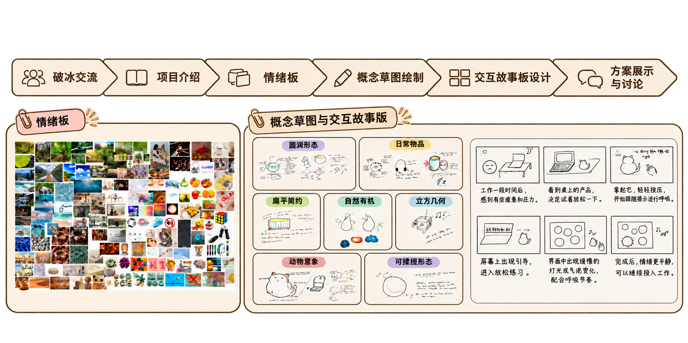
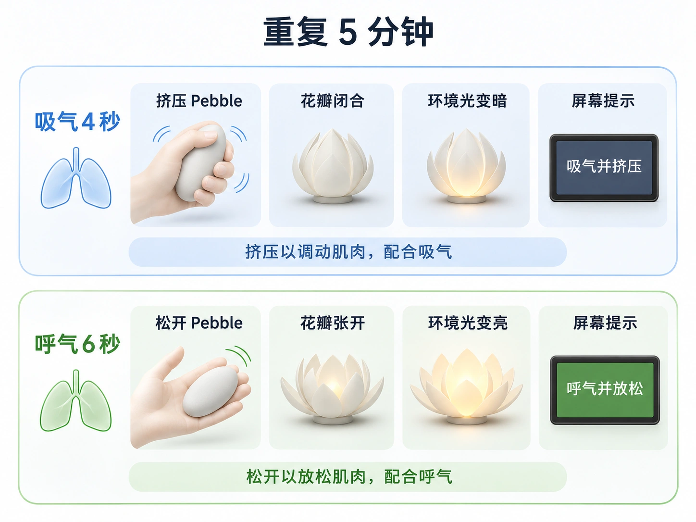

BLOOM
为工作间隙设计的具身情绪调节原型。握住感知石，跟随花瓣的开合呼吸。
项目类型：情绪体验 / 实体交互 / 多模态反馈 / 用户研究
项目职责：独立完成用户研究、交互设计、软硬件原型开发、实地部署与原型评估
项目阶段：需求研究 → 交互设计 → 原型开发 → 实地部署 → 用户评估
问题与设计概念
设计问题：如何帮助办公人群在工作间隙进行情绪调节？
BLOOM 结合呼吸训练与肌肉放松，以莲花装置和感知石为交互载体。用户挤压、释放感知石，跟随花瓣运动及屏幕提示练习呼吸；灯光响应挤压力度，让身体动作获得即时反馈。

用户研究与设计依据
访谈 5 位情绪调节领域专家，了解不同调节方法的适用条件；访谈 16 位办公人群，了解他们何时感到压力、工作中有哪些使用障碍。随后在 5 场共创工作坊中，邀请 17 位参与者用情绪板、草图和故事版探索原型的形态与反馈方式。
- 明确研究目标
- 访谈研究
- 参与式共创工作坊
- 定性分析与需求归纳
| 研究洞察 | 设计回应 |
|---|---|
| 工作繁忙，使用成本需足够低 | 为“茶水间”场景设计，支持随时开始与退出，提供简短提示 |
| 身体动作帮助转移注意力 | 将肌肉放松（挤压、释放）与呼吸节律关联 |
| 感官偏好与调节意愿各不相同 | 提供主动与被动体验，尊重用户选择 |
| 在同事面前练习可能引起额外关注 | 允许用户只跟随花瓣呼吸，并探索共享办公空间中更安静的待机方式。 |

核心交互与反馈
采用 4 秒吸气、6 秒呼气的节律，引导用户吸气时挤压、呼气时释放。花瓣开合表现呼吸节律，灯光响应挤压力度，屏幕提供操作及呼吸提示。

| 交互阶段 | 用户行为 | 装置反馈 | 设计目的 |
|---|---|---|---|
| 开始交互 | 拿起感知石 | 检测拿起动作，切换交互状态，屏幕提供操作提示 | 帮助用户进入练习 |
| 吸气阶段：4 秒 | 挤压感知石 | 花瓣闭合，屏幕提示吸气与挤压；灯光响应挤压力度 | 引导肌肉收紧与吸气同步 |
| 呼气阶段：6 秒 | 释放挤压 | 花瓣张开，屏幕提示呼气与放松；灯光响应挤压力度 | 引导肌肉放松与呼气同步 |
| 主动退出 | 放回感知石 | 结束当前练习，恢复待机 | 保留用户对练习时长的控制权 |
关键决策：用自然意象解释功能，通过身体与系统反馈的对应关系，强化身体与系统的链接感；用户可被动跟随花朵的呼吸节律；主动练习时可随时放回感知石退出。
原型与场景适配
通过压力传感器采集挤压输入，BLE 连接手持端与花朵装置；步进电机驱动花瓣，LED 与屏幕提供反馈，光敏传感器检测感知石是否被拿起。

办公环境中的两种待机方案
第一版让花瓣运动与灯光一起提示呼吸节律。在共享办公室里，电机声和持续运动也可能吸引旁人的注意。第二版待机时保留灯光节律，减少机械运动。两种方案分别部署到不同办公环境，观察反馈方式如何适应实际场地。
实地验证
部署至 3 处办公环境，每处 10–15 个工作日，收集 17 份有效问卷、10 次半结构化访谈。


| 体验指标 | 评分 |
|---|---|
| 易用性 | 4.06/5 |
| 主动交互后的主观放松感 | 3.94/5 |
| 被动体验的主观放松感 | 3.59/5 |
采用 5 点 Likert 量表，1 = 非常不符合，5 = 非常符合。76.47% 的受访者认同主动交互后的放松效果，88.24% 对易用性给出正面评价。

P10 · 主动挤压帮助集中注意力
“我做呼吸训练时很难集中注意力。但加入挤压动作后，我能立刻感知到它，因此更容易专注。”
P8 · 熟悉交互后，希望减少视觉输入
“后来我更喜欢闭上眼睛，不必每次都看屏幕，因为我已经知道接下来会发生什么。”
P2 · 公开使用可能带来心理压力
“如果同事每周都看到我使用它，我会担心他们想：‘她怎么又有压力了？’尤其我刚入职，我有点害怕被认为比较脆弱。”
设计总结
让交互成为体验的核心，而不只是反馈的装饰
实体产品的情绪价值不完全来自外观、动作表现或任何用户只能被动接受的行为，更取决于用户能否通过主动参与，与产品建立有意义的互动。
多模态反馈需要协同，而非简单叠加
动作、灯光、触觉及文字应围绕同一个交互目标协调设计，并考虑感官偏好、使用环境与文化背景。相同的设计，在不恰当的使用环境与文化背景下，可能带来不同的情绪体验。
尊重用户的情绪边界与控制权
情绪支持型产品需要允许用户决定何时开始、如何参与以及何时退出，避免过度干预和不必要的情绪暴露。
← 返回作品集